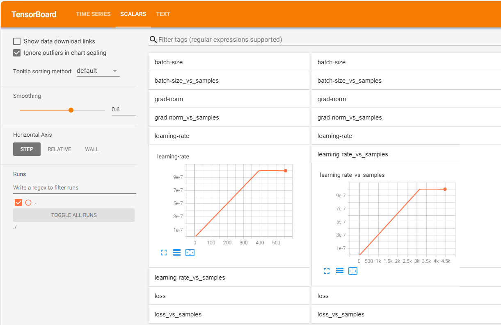
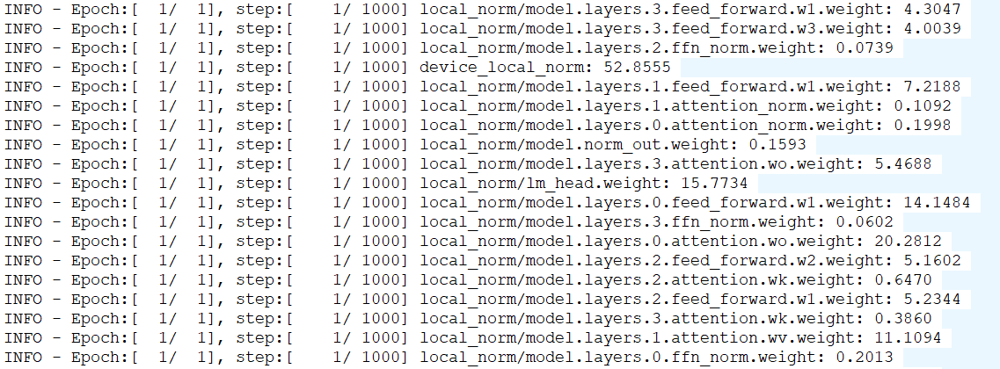
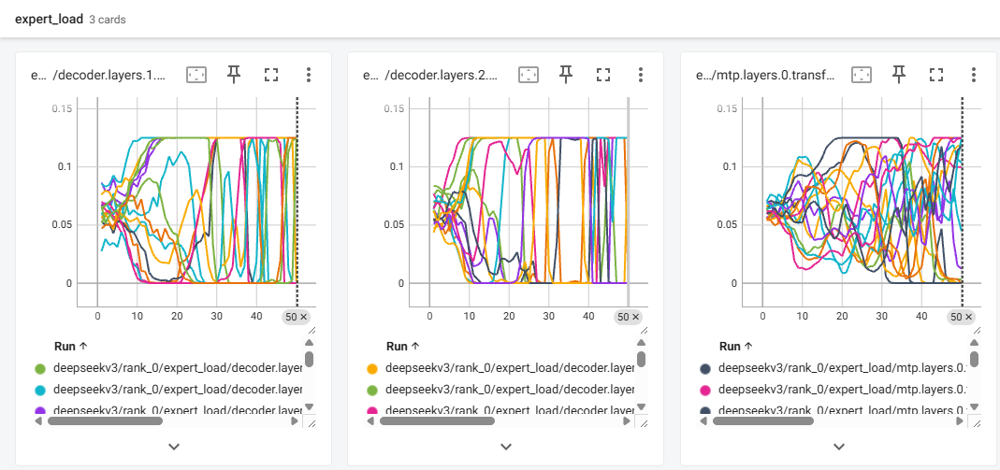

Deprecated
This page belongs to the Static Graph (GRAPH_MODE) Implementation section and has been marked as deprecated. New features are primarily being developed in the “r2.0.0 Dynamic Graph Implementation” section. Please refer to the dynamic graph documentation first.
Training Metrics Monitoring

MindSpore Transformers supports TensorBoard as a visualization tool for monitoring and analyzing various metrics and information during training. TensorBoard is a standalone visualization library that requires the user to manually install it, and it provides an interactive way to view loss, precision, learning rate, gradient distribution, and a variety of other things in training. After the user configures TensorBoard in the training yaml file, the event file is generated and updated in real time during the training of the large model, and the training data can be viewed via commands.
Configuration Descriptions
Configure the “monitor_config”, “tensorboard” and “callbacks” keywords in the training yaml file, and the training will save the tensorboard event file under the configured save address.
A sample configuration is shown below:
Configuration Sample of yaml File
seed: 0
output_dir: './output'
monitor_config:
monitor_on: True
dump_path: './dump'
target: ['layers.0.', 'layers.1.'] # Monitor only the first and second level parameters
invert: False
step_interval: 1
local_loss_format: ['log', 'tensorboard']
device_local_loss_format: ['log', 'tensorboard']
local_norm_format: ['log', 'tensorboard']
device_local_norm_format: ['log', 'tensorboard']
optimizer_state_format: null
weight_state_format: null
throughput_baseline: null
print_struct: False
check_for_global_norm: False
global_norm_spike_threshold: 1.0
global_norm_spike_count_threshold: 10
tensorboard:
tensorboard_dir: 'worker/tensorboard'
tensorboard_queue_size: 10
log_loss_scale_to_tensorboard: True
log_timers_to_tensorboard: True
callbacks:
- type: MFLossMonitor
per_print_times: 1
monitor_config field parameter name |
Descriptions |
Types |
|---|---|---|
monitor_config.monitor_on |
Sets whether monitoring is enabled. The default is |
bool |
monitor_config.dump_path |
Sets the path where the |
str |
monitor_config.target |
Sets the name (fragment) of the target parameter monitored by the indicator |
list[str] |
monitor_config.invert |
Sets the parameter specified by counterselecting |
bool |
monitor_config.step_interval |
Sets the frequency of logging the indicator. Default is 1, i.e., record once per step |
int |
monitor_config.local_loss_format |
Sets the logging form of the indicator |
str or list[str] |
monitor_config.device_local_loss_format |
Sets the logging form of the indicator |
str or list[str] |
monitor_config.local_norm_format |
Sets the logging form of the indicator |
str or list[str] |
monitor_config.device_local_norm_format |
Sets the logging form of the indicator |
str or list[str] |
monitor_config.optimizer_state_format |
Sets the logging form of the indicator |
str or list[str] |
monitor_config.weight_state_format |
Sets the logging form of the indicator |
str or list[str] |
monitor_config.throughput_baseline |
Sets the baseline value for the metric |
int or float |
monitor_config.print_struct |
Sets whether to print all trainable parameter names for the model. If |
bool |
monitor_config.check_for_global_norm |
Sets whether to enable anomaly monitoring for indicator |
bool |
monitor_config.global_norm_spike_threshold |
Sets a relative threshold for the indicator |
float |
monitor_config.global_norm_spike_count_threshold |
Sets the cumulative number of consecutive abnormal indicators |
int |
The optional values for the parameters of the form xxx_format above are the strings ‘tensorboard’ and ‘log’ (for writing to the TensorBoard and writing to the log, respectively), or a list of both, or null. All default to null when not set, indicating that the corresponding metrics are not monitored.
Note: when monitoring optimizer_state and weight L2 norm metrics is enabled, it will greatly increase the time consumption of the training process, so please choose carefully according to your needs. “rank_x” directory under the monitor_config.dump_path path will be cleared, so make sure that there is no file under the set path that needs to be kept.
TensorBoard field parameter name |
Descriptions |
Types |
|---|---|---|
tensorboard.tensorboard_dir |
Sets the path where TensorBoard event files are saved |
str |
tensorboard.tensorboard_queue_size |
Sets the maximum cache value of the capture queue. If it exceeds this value, it will be written to the event file, the default value is 10. |
int |
tensorboard.log_loss_scale_to_tensorboard |
Sets whether loss scale information is logged to the event file, default is |
bool |
tensorboard.log_timers_to_tensorboard |
Sets whether to log timer information to the event file. The timer information contains the duration of the current training step (or iteration) as well as the throughput, defaults to |
bool |
tensorboard.log_expert_load_to_tensorboard |
Sets whether to log experts load to the event file (see expert load monitoring), defaults to |
bool |
It should be noted that without the tensorboard configuration, the “tensorboard” set in xxx_format by monitor_config will be replaced with “log”, i.e., instead of writing to the tensorboard event file, the corresponding information will be printed in the log.
Expert Load Monitoring
The feature of experts load balancing and monitoring is implemented by callback function TopkBiasBalanceCallback, which only supports Deepseek-V3 of mcore. User need to manually supplement configuration of the “model.model_config”, “tensorboard” and “callbacks” keywords in the training yaml file:
model:
model_config:
moe_router_enable_expert_bias: True
moe_router_bias_update_rate: 0.001 # 0.001 is the official open source setting of Deepseek-V3
tensorboard:
log_expert_load_to_tensorboard: True
callbacks:
- type: TopkBiasBalanceCallback
Note: If tensorboard.tensorboard_dir is not specified before, it’s still required to be set.
Viewing Training Data
After the above configuration, the event file for each card will be saved under the path ./worker/tensorboard/rank_{id}, where {id} is the rank number of each card. The event files are named events.*. The file contains scalars and text data, where scalars are the scalars of key metrics in the training process, such as learning rate, loss, etc.; text is the text data of all configurations for the training task, such as parallel configuration, dataset configuration, etc. In addition, according to the specific configuration, some metrics will be displayed in the log.
Use the following command to start the TensorBoard Web Visualization Service:
tensorboard --logdir=./worker/tensorboard/ --host=0.0.0.0 --port=6006
Parameter names |
Descriptions |
|---|---|
logdir |
Path to the folder where TensorBoard saves event files |
host |
The default is 127.0.0.1, which means that only local access is allowed; setting it to 0.0.0.0 allows external devices to access it, so please pay attention to information security. |
port |
Set the port on which the service listens, the default is 6006. |
The following is displayed when the command in the sample is entered:
TensorBoard 2.18.0 at http://0.0.0.0:6006/ (Press CTRL+C to quit)
2.18.0 indicates the version number of the current TensorBoard installation (the recommended version is 2.18.0), and 0.0.0.0 and 6006 correspond to the input --host and --port respectively, after which you can visit server public ip:port in the local PC’s browser to view the visualization page. For example, if the public IP of the server is 192.168.1.1, then access 192.168.1.1:6006.
Explanation of the Visualization of Indicators
The callback functions MFLossMonitor, TrainingStateMonitor and TopkBiasBalanceCallback will monitor different scalar metrics respectively. The TrainingStateMonitor does not need to be set by the user in the configuration file, it will be added automatically according to monitor_config.
MFLossMonitor Monitoring Metrics
The names and descriptions of the metrics monitored by MFLossMonitor are listed below:
Scalar name |
Descriptions |
|---|---|
learning-rate |
learning rate |
batch-size |
batch size |
loss |
loss |
loss-scale |
Loss scaling factor, logging requires setting |
grad-norm |
gradient exponent |
iteration-time |
The time taken for training iterations, logging requires setting |
throughput |
Data throughput, logging requires setting |
model-flops-throughput-per-npu |
Model operator throughput in TFLOPS/npu (trillion floating point operations per second per card) |
B-samples-per-day |
Cluster data throughput in B samples/day (one billion samples per day), logging requires setting |
In TensorBoard SCALARS page, the above metrics (assumed to be named scalar_name) have drop-down tabs for scalar_name and scalar_name-vs-samples, except for the last two. A line plot of this scalar versus the number of training iterations is shown under scalar_name, and a line plot of this scalar versus the number of samples is shown under scalar_name-vs-samples. An example of a plot of learning rate learning-rate is shown below:

TrainingStateMonitor Monitoring Metrics
The names and descriptions of the metrics monitored by TrainingStateMonitor are listed below:
Scalar name |
Descriptions |
|---|---|
local_norm |
Gradient paradigm for each parameter on a single card, records need to set |
device_local_norm |
The total number of gradient paradigms on a single card, records need to set |
local_loss |
localized losses on a single card, records need to set |
device_accum_local_loss |
The sum of localized losses on a single card, records need to set |
adam_m_norm |
The optimizer’s first-order moments estimate the number of paradigms for each parameter, records need to set |
adam_v_norm |
The optimizer’s second-order moments estimate the number of paradigms for each parameter, records need to set |
weight_norm |
Weight L2 paradigm, records need to set |
throughput_linearity |
Data throughput linearity, records need to set |
Note, for local_loss and device_accum_local_loss:
There will be an extra tag added to the metric name written to log or tensorboard (such as
local_lm_loss,device_accum_local_lm_loss), which shows the source of loss. Here are two possible tagslmandmtpcurrently, whereinlmmeans common cross entropy loss of language model andmtpmeans loss of MultiTokenPrediction layer.For pipeline parallel or gradient accumulation cases,
local_lossmetric will record the average localized losses among all micro batches when written to tensorboard, and record localized losses of every micro batch when written to log (with a prefix “micro”, such asmicro_local_lm_loss); in other scenarios,local_lossis equivalent todevice_accum_local_loss.
TopkBiasBalanceCallback Monitoring Metrics
TopkBiasBalanceCallback will monitor the experts load of MoE model and perform dynamic balance (for corresponding configurations, refer to expert load monitoring). Dynamic balance feature is not involved in this documentation, and the names and descriptions of the metrics monitored by TopkBiasBalanceCallback are listed below:
Scalar name |
Descriptions |
|---|---|
expert_load |
The training load ratio of every expert of every MoE layer, records need to set |
Examples of the Visualization of Indicators
Depending on the specific settings, the above metrics will be displayed in the TensorBoard or logs as follows:
Example of logging effect

Example of tensorboard visualization
adam_m_norm:

local_loss and local_norm:

expert_load (figure shows the 16 experts load curves of 3 MoE layers respectively):

Description of Text Data Visualization
On the TEXT page, a tab exists for each training configuration where the values for that configuration are recorded. This is shown in the following figure:

All configuration names and descriptions are listed below:
Configuration names |
Descriptions |
|---|---|
seed |
random seed |
output_dir |
Save paths to checkpoint and strategy |
run_mode |
running mode |
use_parallel |
whether to enable parallel |
resume_training |
whether to enable resume training |
ignore_data_skip |
Whether to ignore the mechanism for skipping data during breakpoints in resume training and read the dataset from the beginning. Recorded only if the |
data_skip_steps |
The number of data set skip steps. Only logged if |
load_checkpoint |
Model name or weight path for loading weights |
load_ckpt_format |
File format for load weights. Only logged if the |
auto_trans_ckpt |
Whether to enable automatic online weight slicing or conversion. Only logged if the |
transform_process_num |
The number of processes to convert the checkpoint. Only logged if |
src_strategy_path_or_dir |
Source weight distributed policy file path. Only logged if |
load_ckpt_async |
Whether to log weights asynchronously. Only logged if the |
only_save_strategy |
Whether the task saves only distributed policy files |
profile |
Whether to enable performance analysis tools |
profile_communication |
Whether to collect communication performance data in multi-device training. Recorded only when |
profile_level |
Capture performance data levels. Recorded only when |
profile_memory |
Whether to collect Tensor memory data. Recorded only when |
profile_start_step |
Performance analysis starts with step. Recorded only when |
profile_stop_step |
Performance analysis ends with step. Recorded only when |
profile_rank_ids |
Specify the rank ids to turn on profiling. Recorded only when |
profile_pipeline |
Whether to turn on profiling by for the cards of each stage in pipeline parallel. Recorded only when |
init_start_profile |
Whether to enable data acquisition during Profiler initialization. Recorded only when |
layer_decay |
Layer decay coefficient |
layer_scale |
whether to enable layer scaling |
lr_scale |
Whether to enable learning rate scaling |
lr_scale_factor |
Learning rate scaling factor. Recorded only when |
micro_batch_interleave_num |
Number of batch_size splits, multicopy parallelism switch |
remote_save_url |
Return folder paths for target buckets when using AICC training jobs |
callbacks |
callback function configuration |
context |
Configuration of the environment |
data_size |
Dataset size |
device_num |
Number of devices (cards) |
do_eval |
Whether to turn on training-while-evaluating |
eval_callbacks |
Evaluate the callback function configuration. Recorded only when |
eval_step_interval |
Evaluate step intervals. Recorded only when |
eval_epoch_interval |
Evaluate the epoch interval. Recorded only when |
eval_dataset |
Evaluate the dataset configuration. Recorded only when |
eval_dataset_task |
Evaluate task configurations. Recorded only when |
lr_schedule |
learning rate |
metric |
evaluation function |
model |
Model configuration |
moe_config |
Mixed expert configurations |
optimizer |
optimizer |
parallel_config |
Parallel strategy configuration |
parallel |
Automatic parallel configuration |
recompute_config |
recomputation configuration |
remove_redundancy |
Whether redundancy is removed when checkpoint is saved |
runner_config |
running configuration |
runner_wrapper |
wrapper configuration |
monitor_config |
Training metrics monitoring configuration |
tensorboard |
TensorBoard configuration |
train_dataset_task |
Training task configuration |
train_dataset |
Training dataset configuration |
trainer |
Training process configuration |
swap_config |
Fine-grained activations SWAP configuration |
checkpoint |
Configuration related to weight saving and loading under Checkpoint2.0 |
The above training configurations are derived from:
Configuration parameters passed in by the user in the training startup command
run_mindformer.py;Configuration parameters set by the user in the training configuration file
yaml;Default configuration parameters during training.
Refer to Configuration File Description for all configurable parameters.